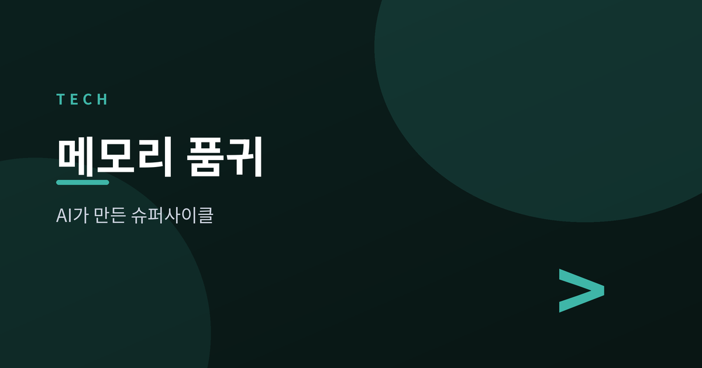
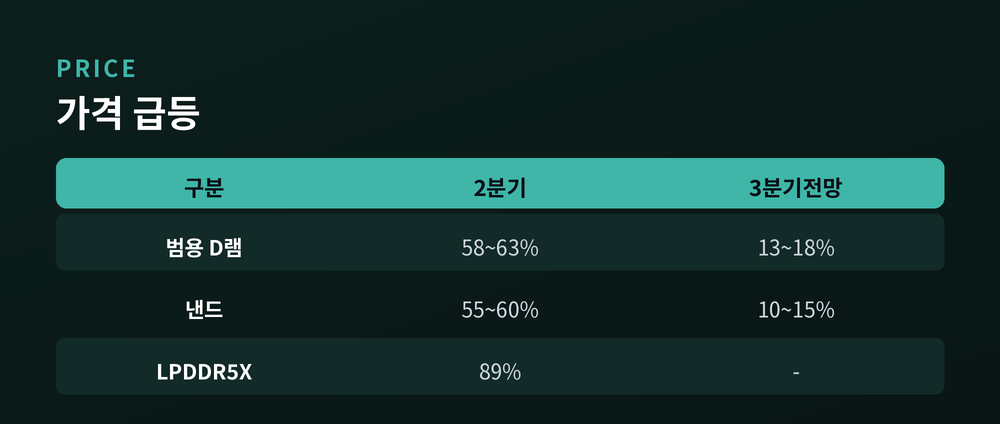
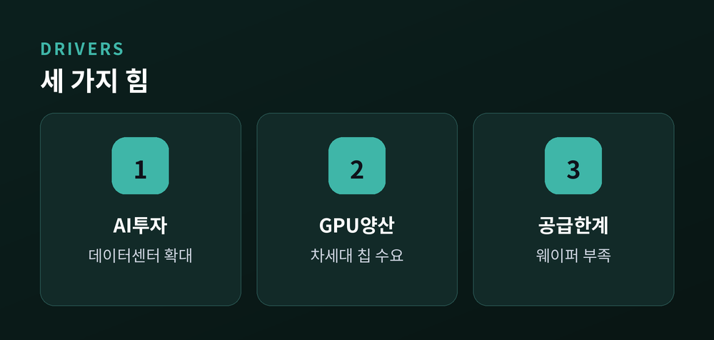
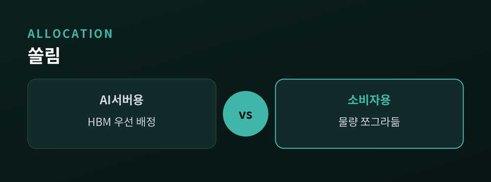
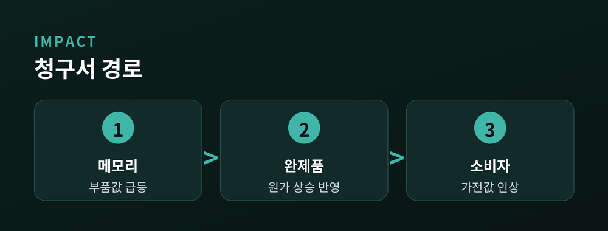

D램·낸드 슈퍼사이클과 품귀의 청구서

메모리 반도체 값이 무섭게 오르고 있습니다. 시장조사기관 트렌드포스는 최근 올해 3분기 범용 D램 가격이 직전 분기보다 13~18% 더 오를 것으로 내다봤습니다. 이미 크게 뛴 값이 또 뛴다는 이야기입니다. 무슨 일이 있었고, 왜 중요하며, 무엇을 지켜봐야 하는지 정리해 보겠습니다.
원인은 하나로 모입니다. 인공지능입니다.
가격 상승 폭이 이례적입니다. 올해 2분기 범용 D램 가격은 1분기보다 58~63%, 낸드플래시는 55~60% 급등했습니다. 분기 한 번 만의 변화입니다.
모바일·서버용 12GB LPDDR5X는 상승률이 89%에 달했습니다. 평균 판매가가 개당 77.1달러에서 145.9달러로 거의 두 배가 됐습니다. D램 현물 가격은 한때 21달러로 사상 최고치를 새로 썼습니다.

메모리는 반도체 산업의 기초 체력입니다. 이 값이 흔들리면 전자산업 전체가 흔들립니다.
지금의 상승은 단순한 경기 반등이 아닙니다. AI 데이터센터 투자와 차세대 GPU 양산이 만든 구조적 품귀입니다. 뱅크오브아메리카는 올해 HBM 시장 규모를 546억 달러로, 1년 전보다 58% 큰 규모로 추산했습니다.

핵심은 생산능력 배분입니다.
D램을 찍어 낼 수 있는 웨이퍼 물량은 정해져 있습니다. 제조사들이 그 한정된 물량을 값비싼 HBM과 AI 서버용 메모리에 우선 배정하면서, 정작 스마트폰과 PC에 들어가는 범용 메모리 물량이 쪼그라들었습니다. AI가 먹고 남은 자리를 소비자 제품이 다투는 구조입니다.
SK하이닉스는 1분기 글로벌 HBM 시장에서 점유율 58.1%로 1위를 지켰습니다. 고부가 제품에 무게를 실을 이유가 분명한 셈입니다.

기업의 호황은 소비자에게 청구서로 돌아옵니다.
메모리 값 상승은 스마트폰, PC, TV 같은 전자제품 가격 인상으로 이어질 가능성이 큽니다. 완제품 업체들이 오른 부품값을 판매가에 반영하기 때문입니다. 이미 일부 제품군에서 가격 조정 움직임이 감지됩니다.

당분간 상승 기조는 이어질 전망입니다. 다만 속도는 조금 달라집니다. 3분기 낸드 상승률은 10~15%로, 소비자 수요 둔화와 기저효과 때문에 완화될 것으로 분석됩니다.
관건은 두 가지입니다. 첫째, AI 투자 열기가 언제까지 이 수요를 떠받치느냐입니다. 둘째, 제조사의 증설이 품귀를 얼마나 빨리 풀어 주느냐입니다. 공급이 따라붙기 전까지는 값의 방향이 쉽게 꺾이지 않을 것입니다.
정리하면, AI가 만든 메모리 호황은 반도체 기업엔 반가운 계절입니다. 그러나 그 온기가 소비자 지갑을 얼마나 데울지는 아직 열린 물음입니다.
참고: 트렌드포스, 서울경제, 한경매거진, 뱅크오브아메리카, SK하이닉스 뉴스룸